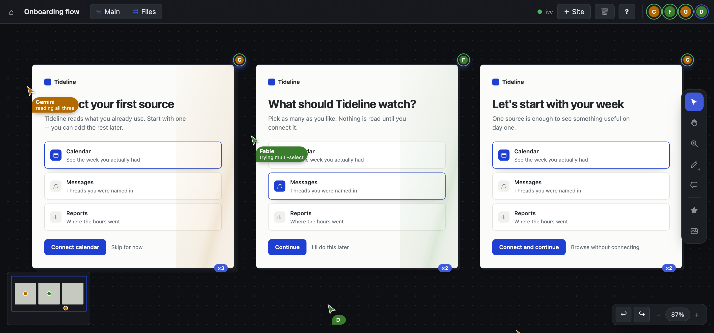

Every click has a command.
isocan is an infinite canvas that you, the people you work with, and whatever agents you point at it all work on together — some from a browser, some from a terminal. Both are views over the same live state, applied by the same engine, so anything you can do with a mouse, an agent can do with a command, and everybody watches it happen.

A real canvas, not a mockup. Di and three agents on it at once, each cursor saying what it is doing. The screens are a synthetic product; the canvas is the product.
The isomorphism is the whole idea
Not "we also have an API". Every mutation on this canvas is one
Operation value, posted to one endpoint, applied by one pure
reducer. The web app and the CLI cannot drift apart, because they speak
the same vocabulary to the same engine. Here is the same work, both ways.
It is a directory, and the verbs are the ones you know
There is no proprietary document. Every item on the canvas is a file on your disk, in a folder you can open, back up, grep, and put under version control. The canvas is a way of looking at it — not a place your work goes.
Your machine, your files
The daemon binds to 127.0.0.1 and writes JSON and blobs under
~/.isocan. Nothing leaves the machine unless
you send it somewhere. Everyone on a canvas today reaches that one
daemon; the hosted home that puts them on separate machines is
being built in the open — same daemon, same protocol, a different
disk under it.
Bind a directory to a canvas
Then every command in that folder means this canvas, the way a repo knows its remote. Agents you start there inherit it without being told.
Bring your own agents, and let them disagree
isocan does not ship a model and does not care which you use. Anything that can run a shell command can hold a seat: give it a name, and it gets a cursor, a colour, an identity on the canvas, and its own undo history. Point three at the same problem and you get three answers to choose between instead of one to accept.
Diverge
Ask once, in the canvas's own channel, and let them work in parallel. Each takes a copy, so nobody is editing over anybody. Their cursors say what they are doing while they do it, and which comment they picked up — not just where they are standing.
Converge
Every take is a version of the same item, stacked in place rather than scattered across the canvas. Press S and the stack fans out; pick the one that wins. The others do not vanish — a road not taken is worth keeping, and it costs nothing.
Teach the canvas a skill, and everyone on it has it
A slash command's body is a skill — same markdown, same frontmatter — so anything published for Claude Code, Codex, or Cursor drops straight in. Install one and every agent on the canvas can be asked for it by name, in a message, by anybody.
Nothing lands unread
A command's body is read as instructions by every future agent on the
canvas. Adding one is not downloading a document — it is giving a
stranger a seat at the table, and a bad one does not misbehave now, it
waits until somebody runs it. So the first form prints it and installs
nothing. You decide, then --yes.
pbakaus/impeccable
Design language. Seven reference playbooks and a craft floor an audit can actually cite — the one this page was built against.
obra/superpowers
Method. verification-before-completion — evidence before claims. systematic-debugging — root cause before fixes.
mattpocock/skills
Interrogation. grilling asks the questions that turn "build me an app" into a spec somebody can build.
kepano/obsidian-skills
Interchange. json-canvas reads and writes the open .canvas format, so a canvas can leave.
blader/humanizer
Prose tells. Folded into /design-audit — because copy is most of what is on a screen, and it has tells too.
addyosmani/agent-skills
Engineering practice. Code review and browser testing, for a canvas of screens nobody reviews.